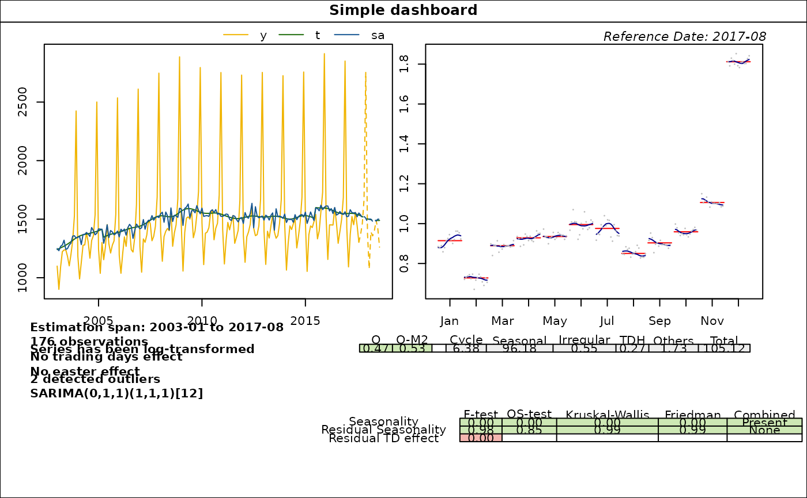
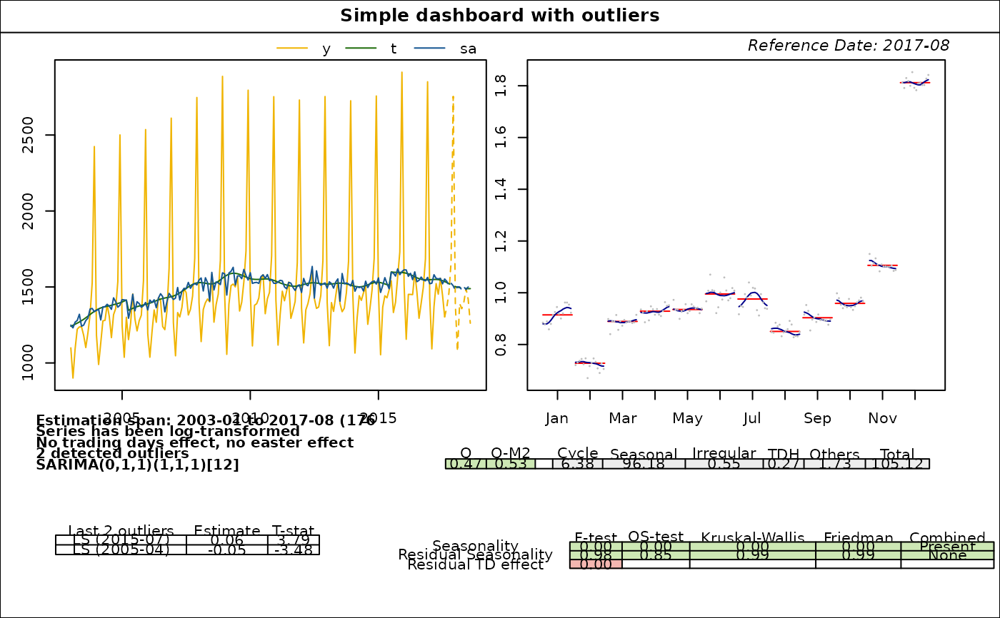
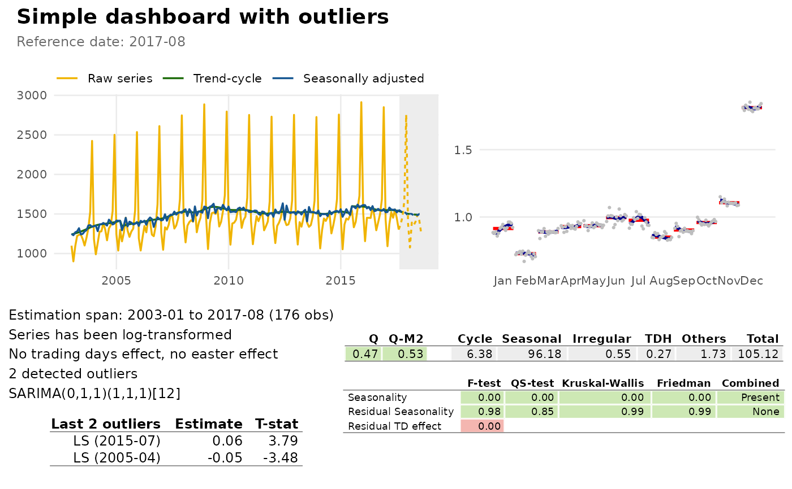

R/simple_dashboard_plot.R
plot.simple_dashboard.RdFunctions to plot a simple dashboard of a seasonal adjustment model: plot() uses base R graphics
and autoplot() uses ggplot2 (and patchwork).
With autoplot(), the tables keep their natural size (their font size is reduced if the figure is too small)
and only the plots are resized.
# S3 method for class 'simple_dashboard'
plot(
x,
main = "Simple Dashboard",
subtitle = NULL,
color_series = c(y = "#F0B400", t = "#1E6C0B", sa = "#155692"),
reference_date = TRUE,
colors = dashboard_colors(),
digits = x$digits,
digits_outliers = x$digits_outliers,
decimal.mark = getOption("OutDec"),
...
)
# S3 method for class 'simple_dashboard'
autoplot(
object,
main = "Simple Dashboard",
subtitle = NULL,
color_series = c(y = "#F0B400", t = "#1E6C0B", sa = "#155692"),
reference_date = TRUE,
colors = dashboard_colors(),
digits = object$digits,
digits_outliers = object$digits_outliers,
decimal.mark = getOption("OutDec"),
base_size = 10,
table_base_size = 9,
...
)A simple_dashboard object.
Main title.
Subtitle.
Color of the raw time series, the trend and the seasonally adjusted component.
Boolean indicating if the reference date should be printed.
colors of the tables according to the status of the statistics (see dashboard_colors()).
number of digits used in the tables (by default the values used in simple_dashboard()).
the character used as decimal mark.
Other unused parameters.
base font size of the plots and of the text.
base font size of the tables.
data <- window(rjd3toolkit::ABS$X0.2.09.10.M, start = 2003)
sa_model <- rjd3x13::x13(data)
dashboard_data <- simple_dashboard(sa_model)
plot(dashboard_data, main = "Simple dashboard")

dashboard_data2 <- simple_dashboard2(sa_model)
plot(dashboard_data2, main = "Simple dashboard with outliers")

autoplot(dashboard_data2, main = "Simple dashboard with outliers")
